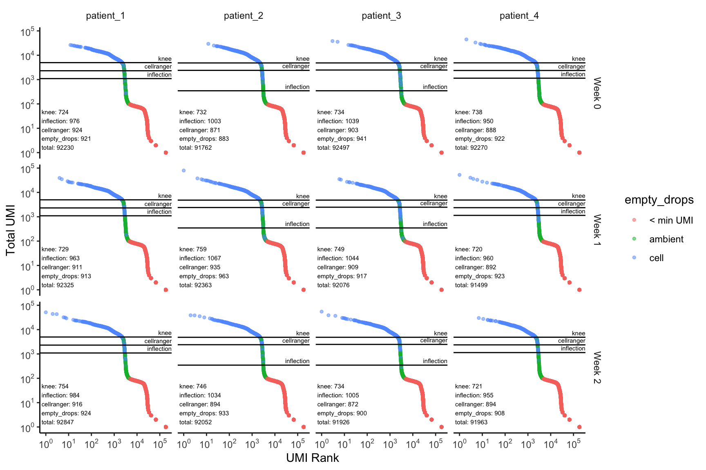

For this tutorial, we run preprocessing on the 10k PBMCs from a Healthy Donor (v3 chemistry) dataset from 10X Genomics, starting with the raw feature-barcode matrix.
First, we load in some required packages and download the dataset.
library(scanalysis)
library(BiocFileCache)
library(purrr)
library(magrittr)
bfc = BiocFileCache("raw_data", ask = FALSE)
raw.path = bfcrpath(
bfc,
"http://cf.10xgenomics.com/samples/cell-exp/3.0.0/pbmc_10k_v3/pbmc_10k_v3_raw_feature_bc_matrix.tar.gz"
)
untar(raw.path, exdir = file.path("raw_data/pbmc10k"))Next, we load the dataset, and also split this data randomly to represent the a use-case where we have 4 patient samples, each containing cells from 3 timepoints (obtained using cell-hashing for example). This is to highlight the multi-sample capabilities of scanalysis. Additionally, we immediately remove barcodes with zero UMI counts.
pbmc_10k = read_10x("raw_data/pbmc10k/raw_feature_bc_matrix/")
subset_data = function(indices) {
sce = pbmc_10k[, indices]
sce$timepoint = sample(paste0("Week ", 0:2), length(indices), replace = TRUE)
sce[, Matrix::colSums(SummarizedExperiment::assay(sce)) > 0]
}
dataset = map(split(1:ncol(pbmc_10k), paste0("patient_", 1:4)), subset_data)
rm(pbmc_10k)The next step is to identify droplets that actually contain cells. The filter_ambient_barcode function is used for this. It runs four different methods for identification of cell-containing barcodes:
All four methods are always run to understand how each of the methods compare, as the results are often dataset-dependent.
ambient_rna_filters = map(dataset, ~ filter_ambient_barcode(.x, 2500))Each one of these results contains a list of booleans indicating which barcodes contain cells. Additionally, each result has attributes that are used in the following plotting function. We now plot the results of each of these filtering methods.
plot_barcode_qc(sce_list = dataset,
ambient_rna_filters = ambient_rna_filters,
facet_columns = ".sample",
facet_rows = "timepoint")
Here, for each sample, and timepoint within each sample, we have a barcode distribution plot, fully annotated with the cutoffs based on each of the methods, as well as the number of cells retained by each of the individual filters. We now use this visualization to decide that using the emptyDrops filter looks fine, and, as expected, gives us the most number of cells recovered.